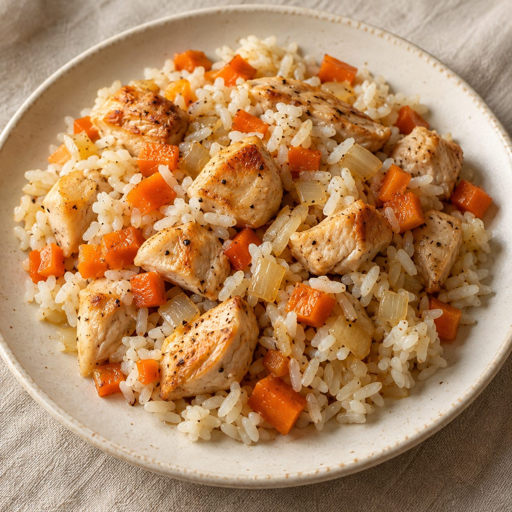
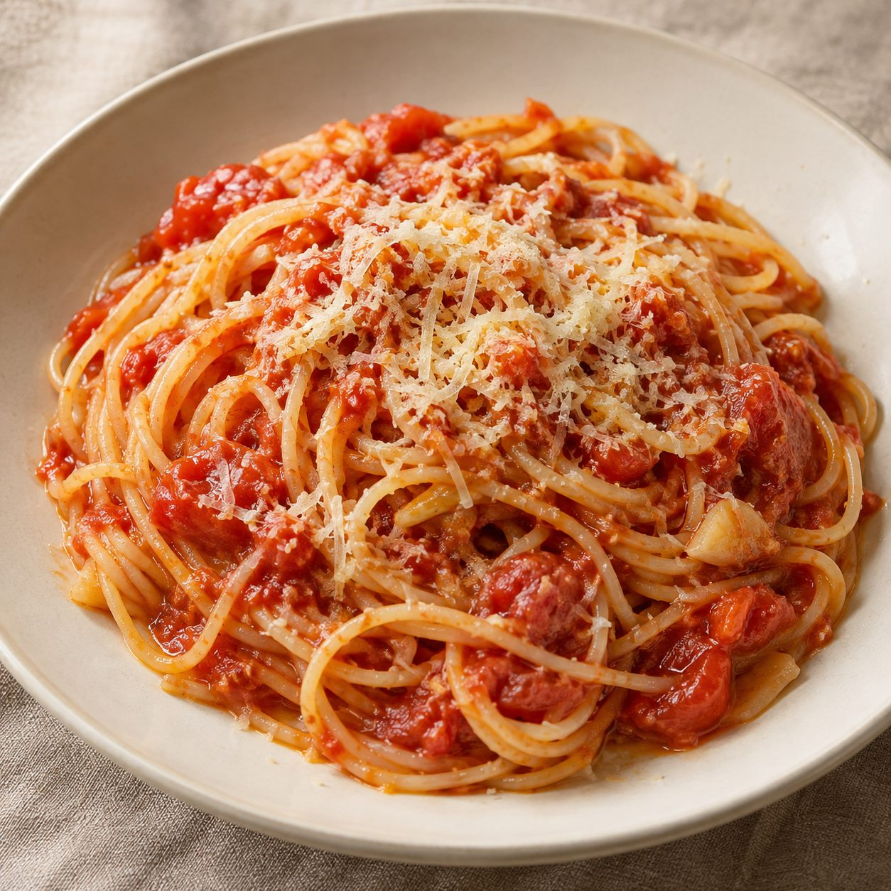

Отдельный от ужина сценарий. Можно написать одно слово, фразу или надиктовать пожелание прямо в Mini App. Сначала ищем готовый рецепт; только если его нет, создаём новый с фотографией блюда.
01 · Главная · выбор действия
Три идеи для ужина с учётом предпочтений.
Сначала поищу готовый рецепт. Если подходящего нет — составлю новый.
01Б · Диктовка в Mini App
Записываю… Нажми ещё раз, когда закончишь.
После остановки запись превращается в текст. Его сразу используем для подбора.
02А · Подходящий готовый рецепт

30 минут · 2 порции · пример
02Б · Нет подходящего · генерация
Учитываю запрос и пищевые ограничения. Новый рецепт появится в обычной карточке.
03Б · Новый рецепт · полная карточка

25 минут · 2 порции · пример
Переходы: главная → короткий текст или микрофон → подходящий рецепт из личной коллекции или готовой базы → полная карточка; если подходящего нет → генерация одного рецепта → карточка с фотографией, которая появляется в фоне → добровольное сохранение. Голосовой запрос в чате проходит тот же порядок. Фотографии в макете показывают ожидаемый вид карточки; в рабочем приложении изображение нового блюда создаётся для конкретного рецепта.